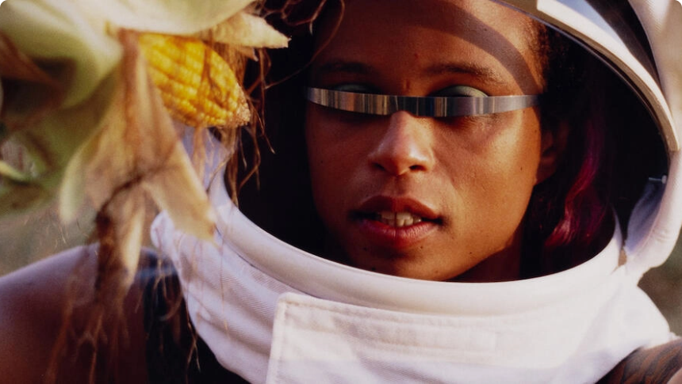

Frieze Los Angeles 2022: Qalereyalar və Proqramın əsas məqamları açıqlandı

Yarmarka 2022-ci ilin fevralında Beverli Hillsdə yeni əsas məkan və 100-dən çox iştirakçı qalereya ilə qayıdır.
Frieze Los Angeles 17-20 fevral 2022-ci il tarixlərində The Beverly Hilton otelinə bitişik, Beverly Hillsdəki
9900 Wilshire Bulvarı ünvanında yeni məkana qayıdır.
İlk dəfə olaraq Christine Messineo (Frieze Los Angeles və Frieze New York direktoru) tərəfindən idarə olunan
Frieze Los Angeles 2022 dünyanın 100-dən çox aparıcı qalereyasını bir araya gətirərək, şəhərin yaradıcı ruhunu qeyd edəcək.
Amanda Hunt (İctimai Proqramlar və Yaradıcılıq Təcrübəsi Direktoru, Lukas Təsvir İncəsənət Muzeyi)
yarmarkanın Los-Ancelesdə yerləşən 15 yaş və ya daha az yaşlı 11 məkanı diqqət mərkəzində saxlayan
bölməsi olan Focus LA-ya nəzarət edəcək. Sərgidə ilk dəfə iştirak edən Focus LA qalereyalarına Baert
Gallery, Garden, Gattopardo, In Lieu, Luis De Jesus Los Angeles, Marta, Stanley's və Stars daxildir.
Geri qayıdan iştirakçılar arasında Bel Ami, Charlie James Gallery və Parker Gallery var.
Amanda Hunt (İctimai Proqramlar və Yaradıcılıq Təcrübəsi Direktoru, Lukas Təsvir İncəsənət Muzeyi) yarmarkanın Los-Ancelesdə yerləşən
15 yaş və ya daha az yaşlı 11 məkanı diqqət mərkəzində saxlayan bölməsi olan Focus LA-ya nəzarət edəcək. Sərgidə ilk dəfə iştirak edən
Focus LA qalereyalarına Baert Gallery, Garden, Gattopardo, In Lieu, Luis De Jesus Los Angeles, Marta, Stanley's və Stars daxildir.
Geri qayıdan iştirakçılar arasında Bel Ami, Charlie James Gallery və Parker Gallery var.
Bundan əlavə, Friz Həftəsi şəhər boyu genişlənmiş sərgi və tədbirlərin proqramı 14 fevral bazar
ertəsi başlayacaq və yarmarka boyu davam edəcək. Friz Həftəsi LA-nın dinamik sənət mənzərəsini
təşkil edən bir çox icmaları qeyd edən və nümayiş etdirən qalereyalarda, muzeylərdə, vətəndaş
təşkilatlarında və digər rəssamların idarə etdiyi məkanlarda geniş proqramlaşdırma spektrini əhatə edəcək.
Həftə ərzində baş tutan əsas institusional sərgilərə aşağıdakılar daxildir: The Broad-da
“Onilliyin Seçilmiş Satınalmaları”; Kaliforniya Afrika Amerika Muzeyində "LaTroya Ruby Frazier:
The Last Cruze"; Hammer Muzeyində "Həyat" və "Uliss Cenkins: Sizin şərhiniz olmadan"; LACMA-da
'Qara Amerika Portretləri'; və MOCA-da "Pipilotti Rist: Böyük Ürək, Mənim Qonşum Ol".